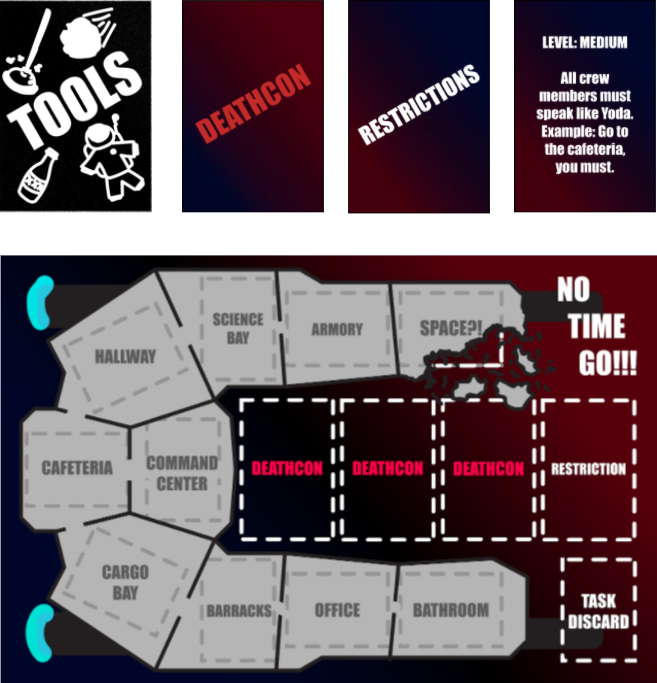
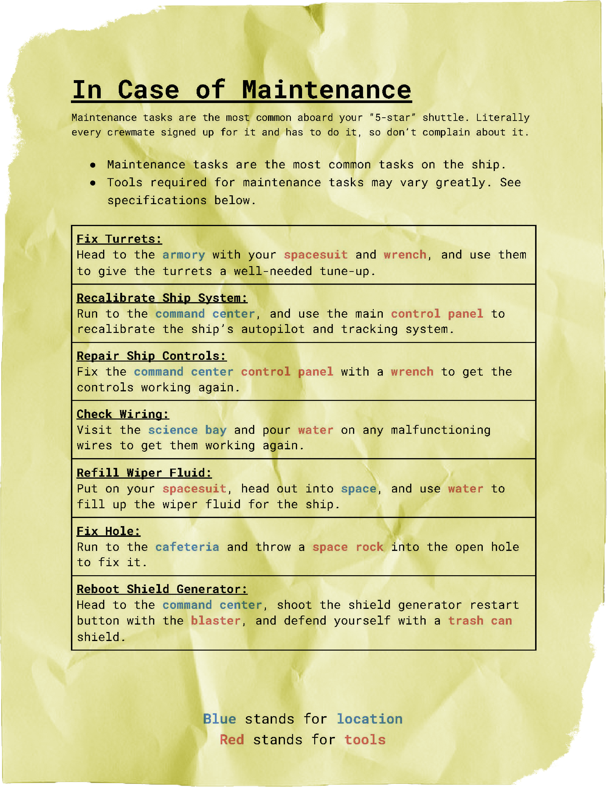
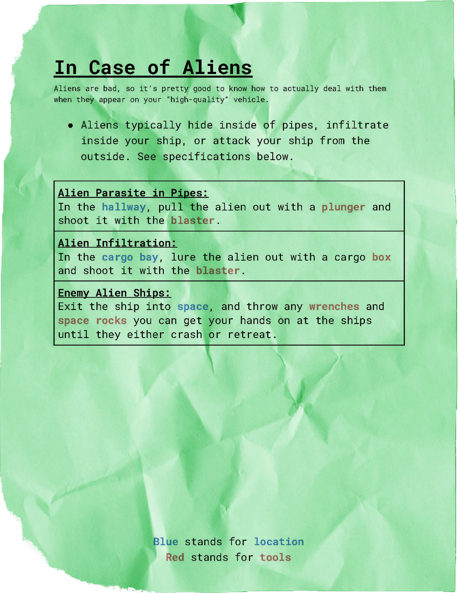
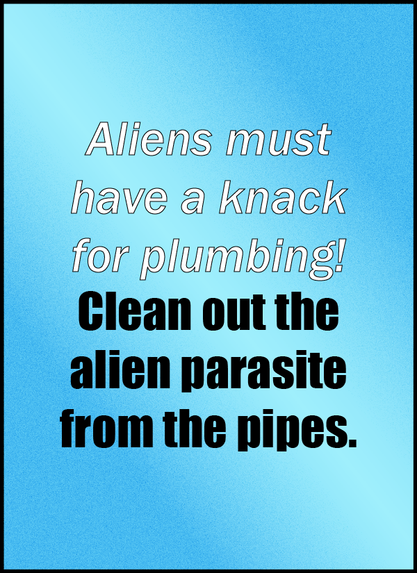
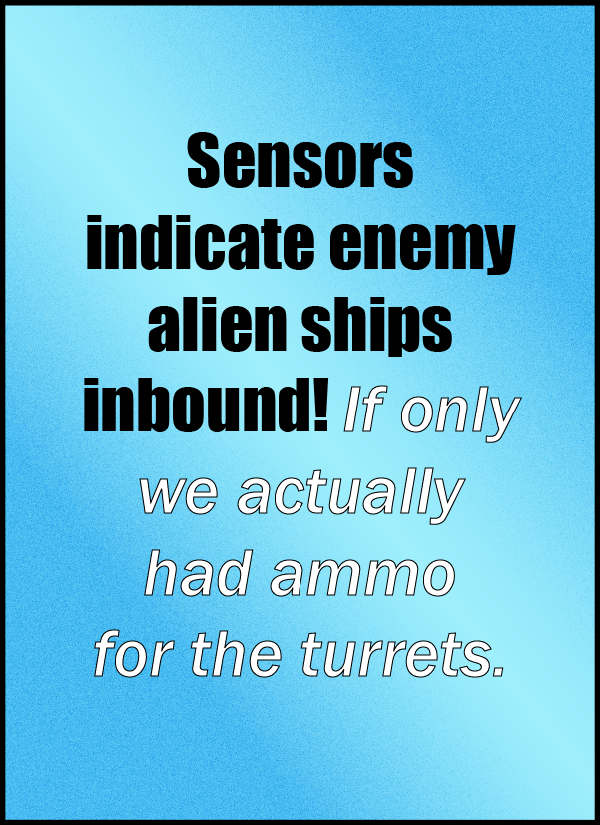

NO TIME GO!!!
NO TIME GO!!! is a fully complete 4 player CO-OP board game that a team and I created for our class. I was the lead designer for this project.
The objective of the game is to work with your team mates to work together stop the ship from exploding. Complete 4 rounds of 4 tasks each to prevent the ship from exploding, solutions to the tasks are found in the Emergency Manuals tha teach player receives. Players have 4 minutes to finish all of their tasks each round.
As lead designer, I worked with my team and communicated closely with them on figuring out the ideas, mechanics and art for the game. While the game’s original concept was designed by me in a previous solo project, implementing everyone's ideas and to flesh out the original concept was a fantastic experience. I encouraged everyone to contribute what they feel should be right for the game, and at times when we were stuck, stepped in to give my final say on what goes in. We conducted numerous playtests as well, always changing up the game with each suggestion. By doing this, our pace to complete this game within a semester was possible. And once we completed the project, we were highly satisfied with what we made and felt the game reflects exactly what we wanted out of it; an absolutely fun game to play
Our team and I worked remotely on this project, and due to this nature all of the content for the game was made in Table Top Simulator. All assets were then uploaded to Gamecrafter for a physical version of the game.
Credits:
Dominick Tamras- Lead Designer.
Max Barber - Designer.
Hyuck(Tommy) Ju Kim- Producer/Designer.
Josef Lopez - Artist/Designer.
Download (PC)     